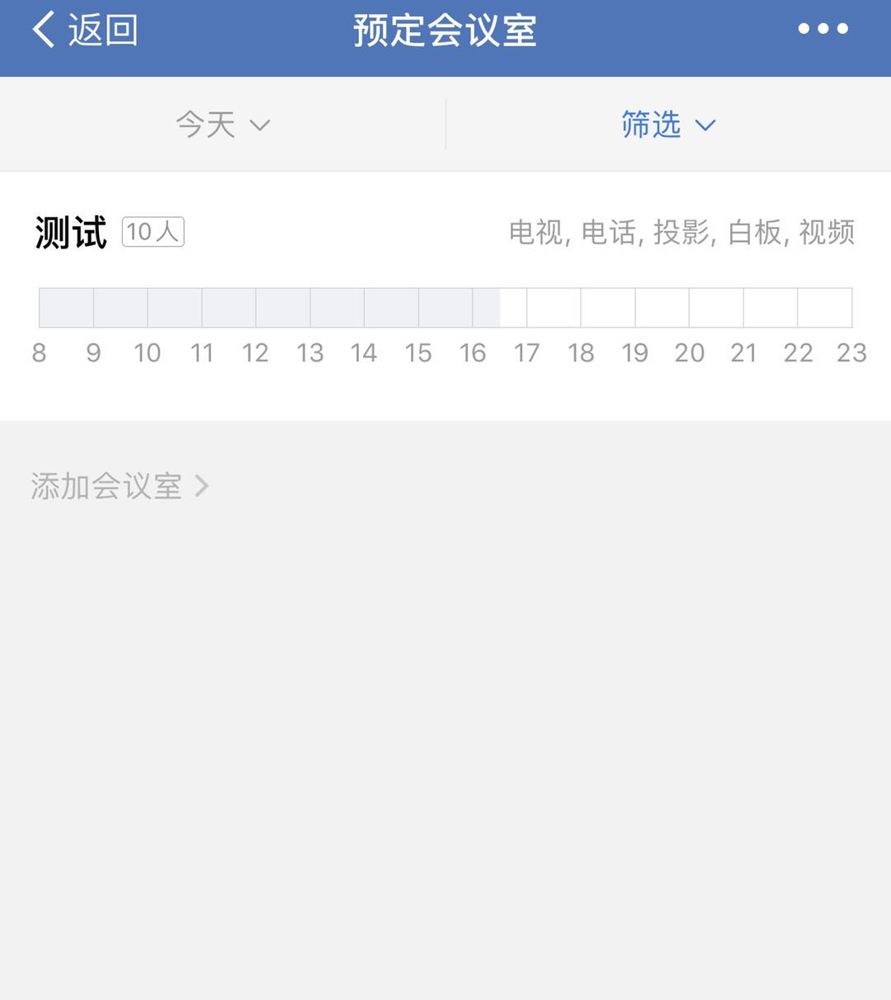
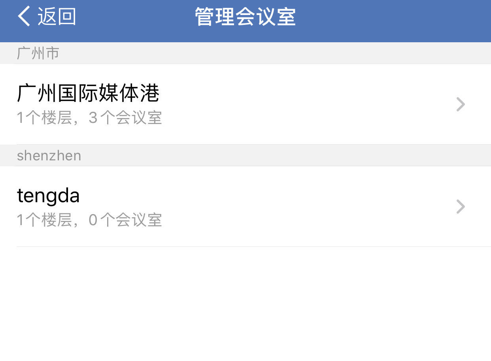
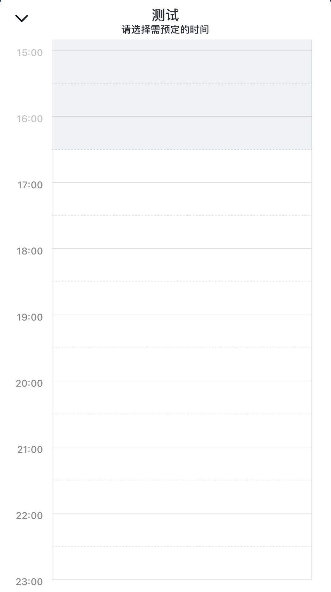
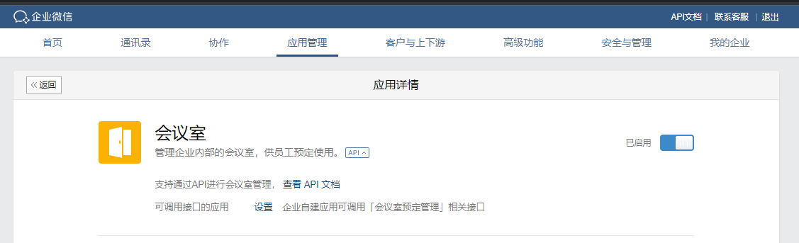

目录
企业通过会议室预定相关接口，可以方便的将企业已有系统的会议室预定管理，同步到企业微信的会议室应用。
● 会议室：即对应一个线下具体的会议室。会议室有一些基本的属性，如会议室名称、所在位置、可容纳人数、设备信息。
● 会议室管理：包括新增、删除会议室、获取当前企业的会议室列表。
● 会议室预定：可以指定某一会议室在某个时间段由某位成员预定使用，其他成员则不能预定该会议室的当前时间段，除非原有预定者取消了会议室预定。
